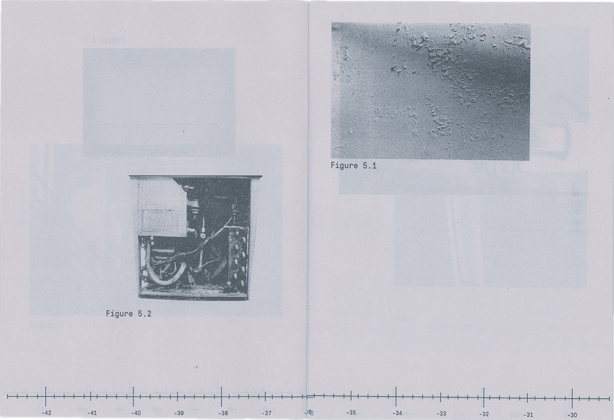
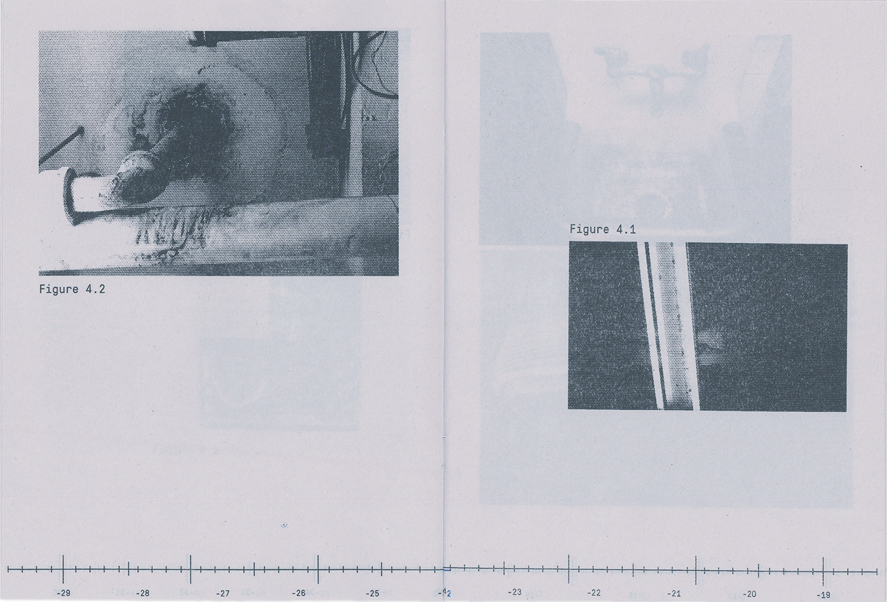
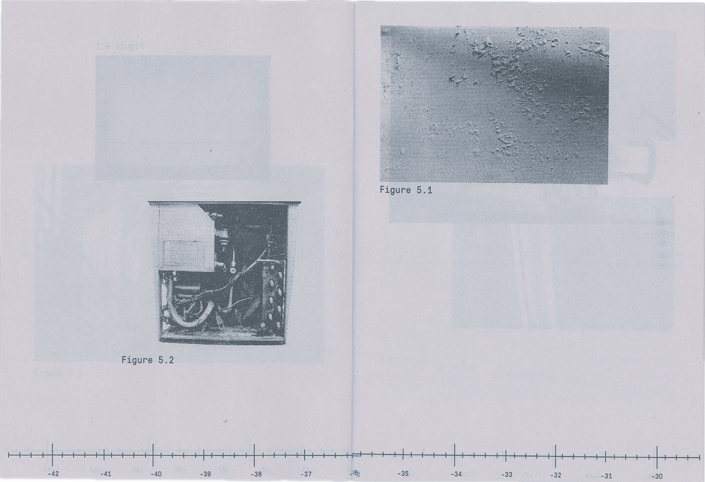
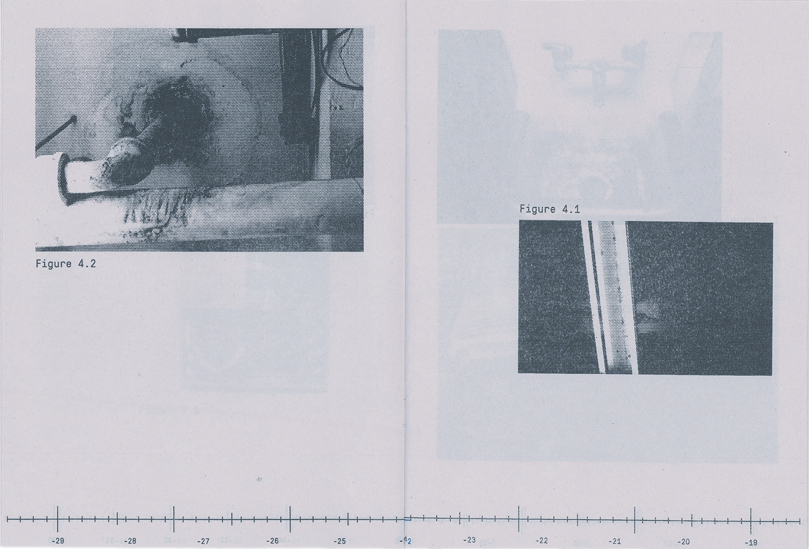
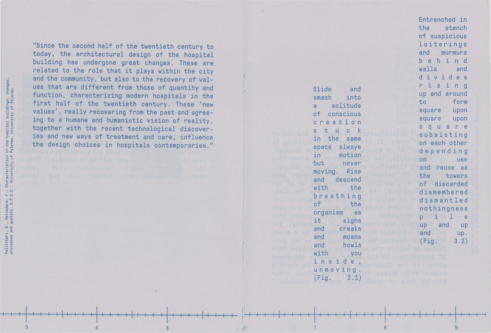
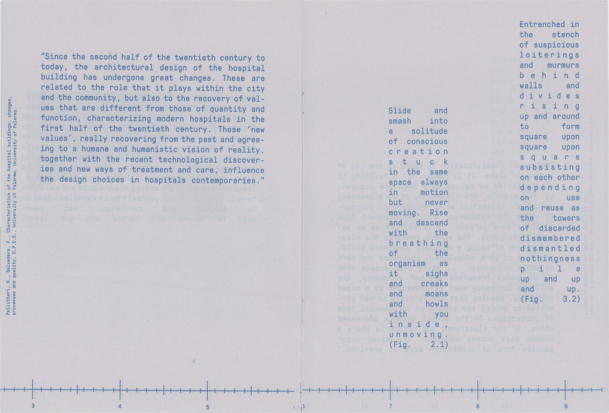
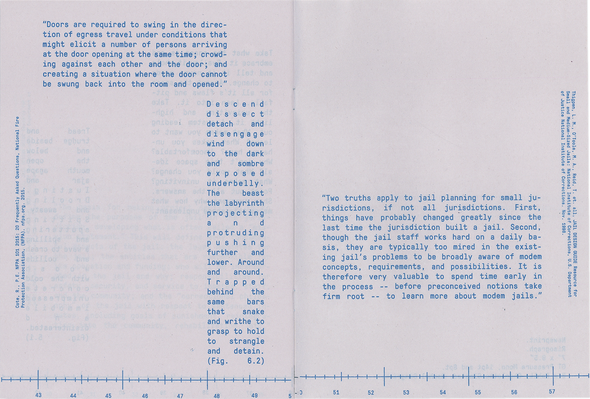
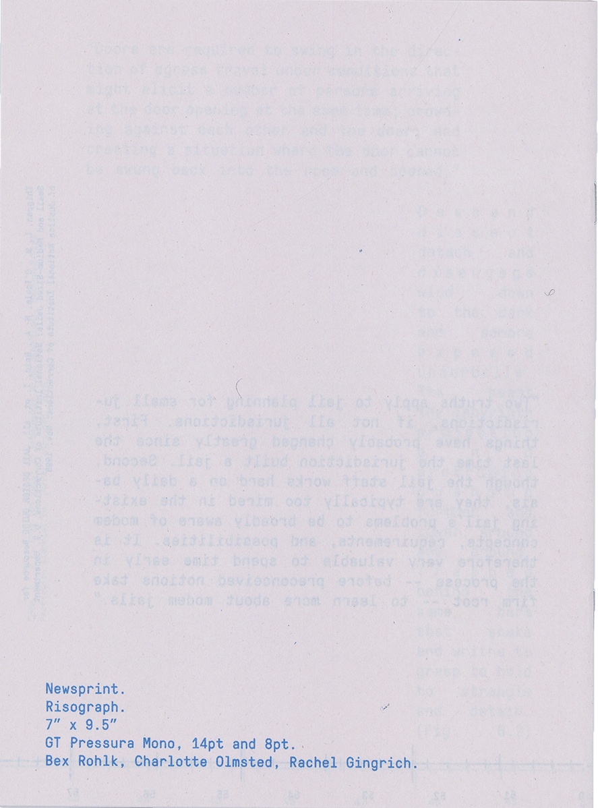
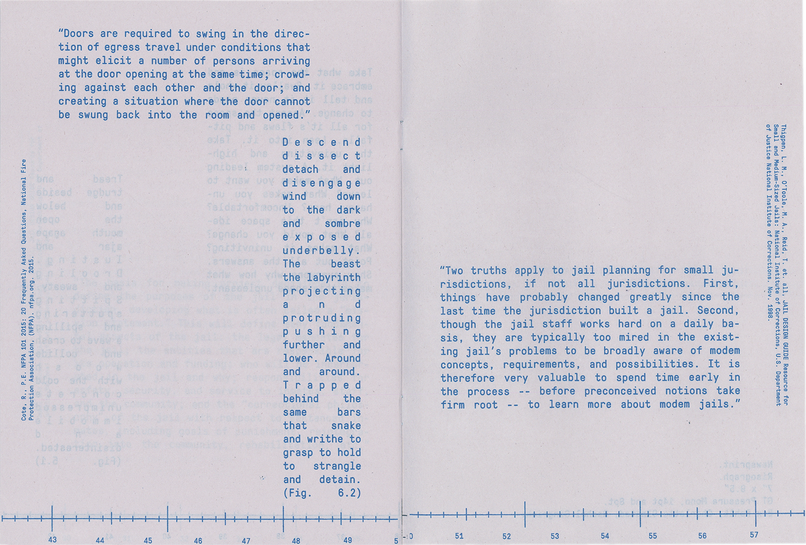
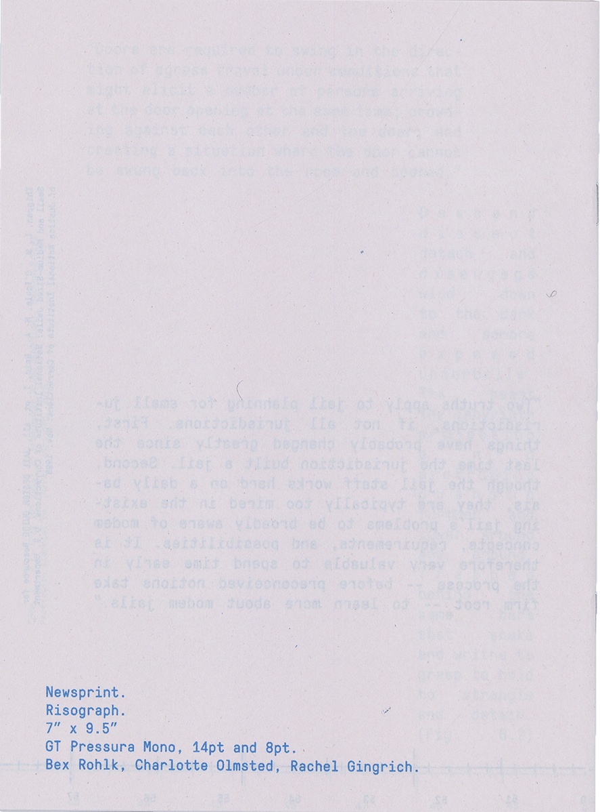

In/To Out
In/To Out is a manual of a speculative wayfinding system for the Pollak building at Virginia Commonwealth University. The project focused on how the building is uninviting and raw. The developed system was one that works from the inside out; instead of a wayfinding system that makes a clear path for entering and engaging with the space, a system that instead directs the subjects outward.
The text of the manual is a combination of quotes from research and authored poetry.
The publication is 2-color risograph printed on newsprint and held with a book band. It was an edition of 22.
The project was produced in collaboration with Bex Rohlk and Charlotte Olmsted.

 



 

 


